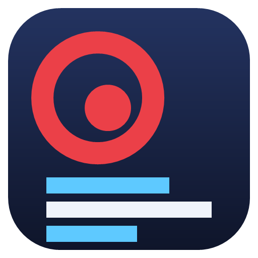
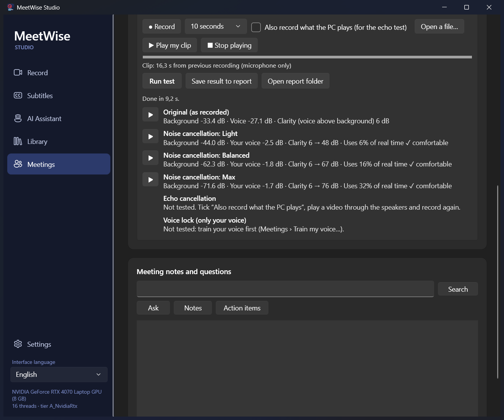
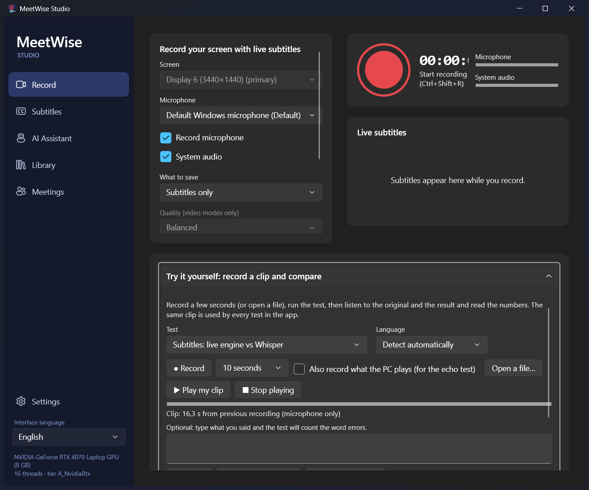
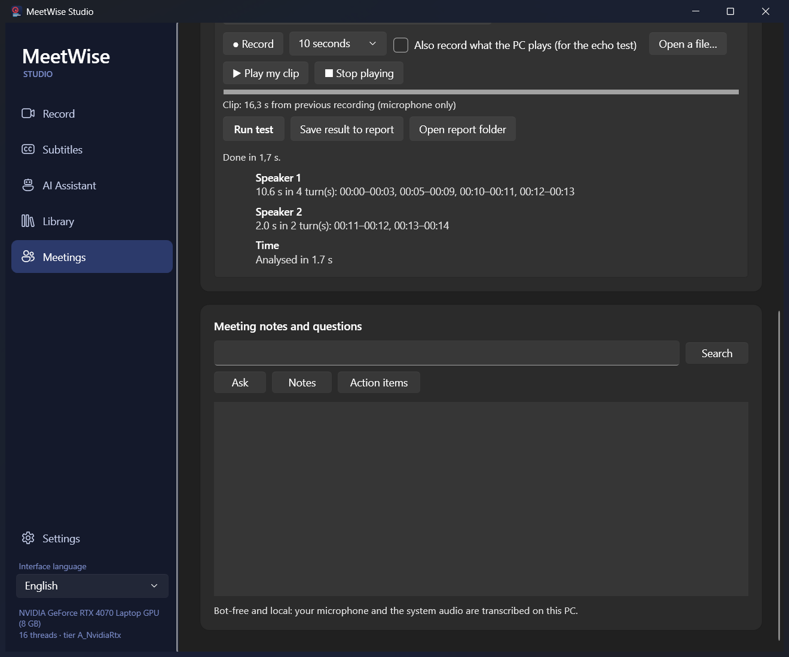
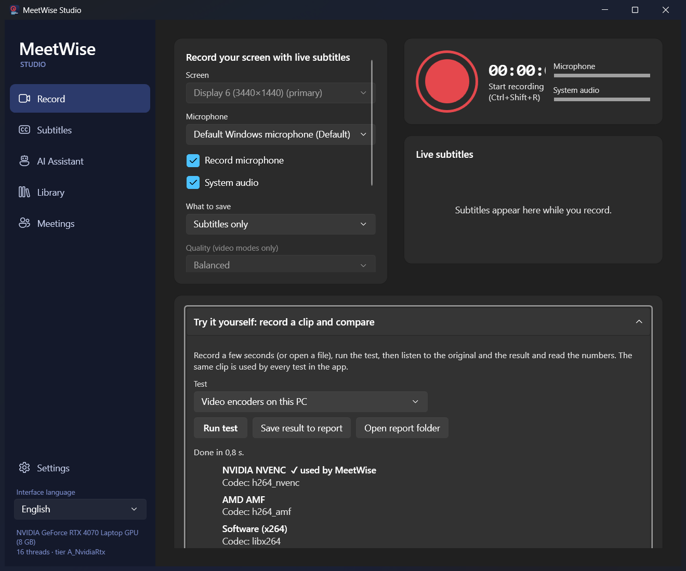
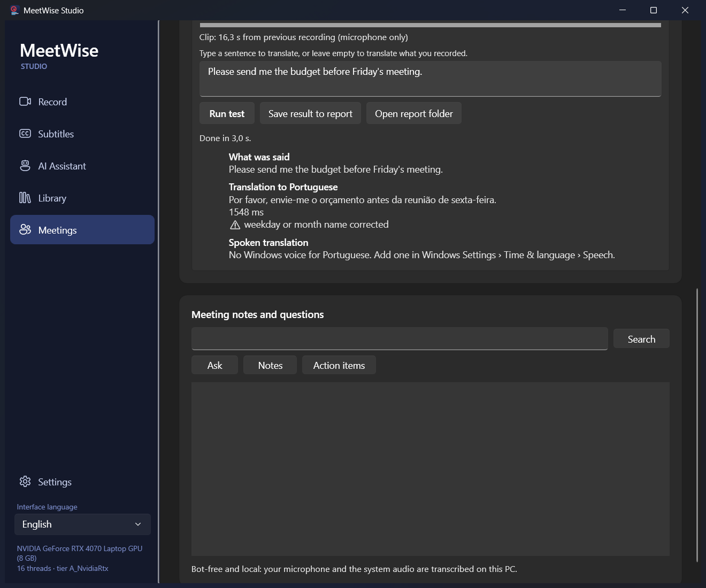
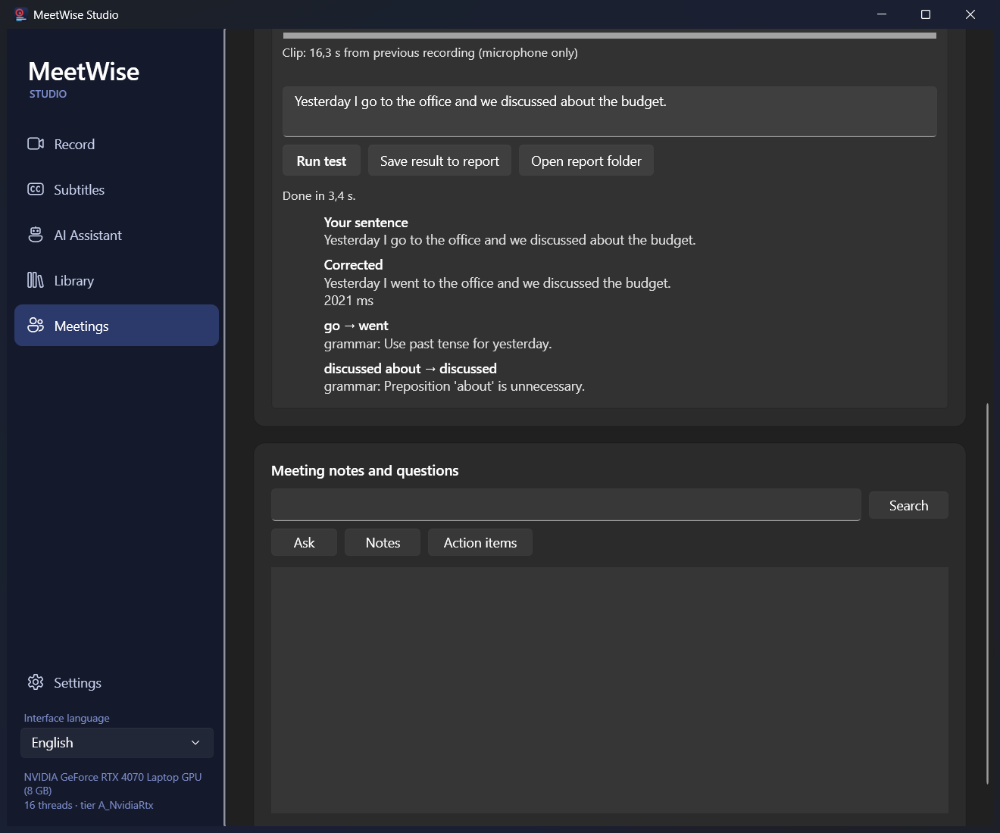
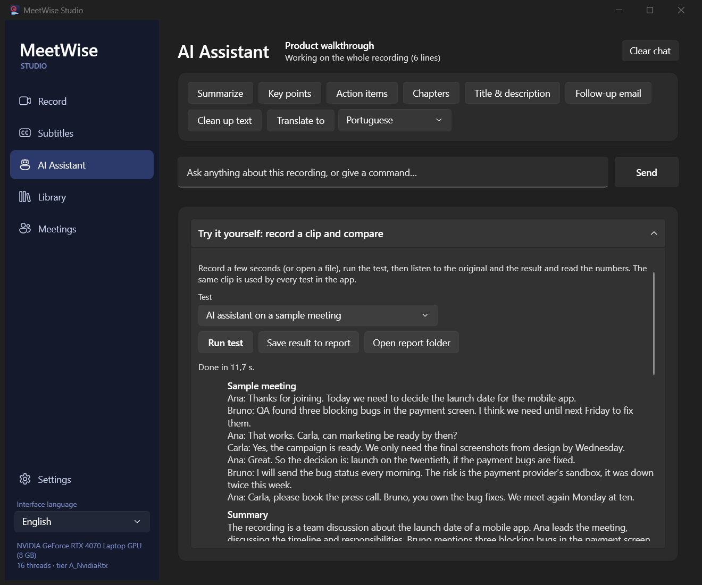
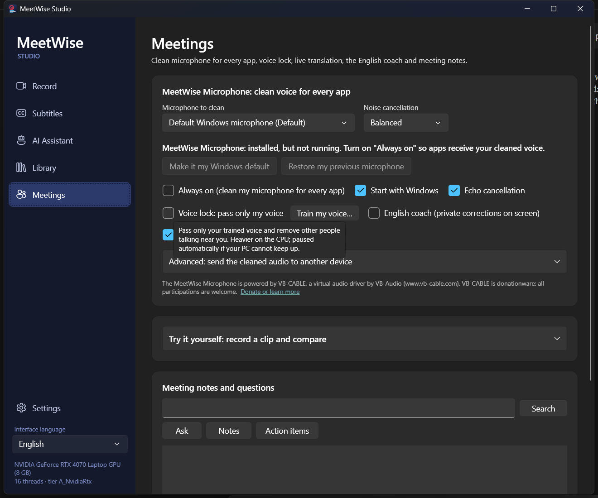

Screenshots
The app
The Studio has five pages: Record, Subtitles, AI Assistant, Library and Meetings. These are real screenshots of the build on an RTX 4070 Laptop, in the language you chose above.



An AI assistant for your meetings that runs on your own PC. It records what you hear and say, cleans up your microphone, transcribes live, and turns each meeting into notes, action items and answers. Everything works offline; a cloud API key is an optional upgrade. And you can test every feature yourself: record a few seconds, listen to the original and the processed result, and read the numbers.
Krisp-style audio clean-up, meeting intelligence and recording, combined in one app. Nothing leaves your machine unless you choose a cloud provider.
Record a monitor while subtitles appear live in any language. Save video + audio + subtitles in one MP4 (the subtitles are a track you can switch on and off, and an .srt is saved beside it), video + audio, audio only, or only the text. Then ask the AI to summarise, list action items, write chapters or translate.
Every page has a “Try it yourself” panel: record a clip (or open a file), run the feature on it, play the original and the result, and read quality and speed numbers. Save results to a report to compare runs over time.
NewHover any control to learn what it does and what the trade-off is. About 140 tooltips, in English, Portuguese and Spanish.
NewImport audio or video (track chosen by language, optional noise filter), paste a YouTube link, or let a watched folder subtitle everything you drop in it.
Records your microphone and the system audio as two separate channels, so no bot joins the call and “me” and “others” are kept apart.
WorkingStreaming speech-to-text with partial results and timestamps, plus a Whisper “Refine” pass that runs on the GPU for higher accuracy in 99 languages.
WorkingThree noise-suppression levels, adaptive echo cancellation, and a voice lock that keeps only the voice you enrolled. Voice lock needs about 45 % of one real-time budget here; if a PC cannot keep up, MeetWise pauses it by itself and tells you.
WorkingNotes, decisions, risks and action items with owners and dates. Ask questions across all meetings and get answers with timestamp citations.
WorkingReads any iCal calendar, reminds you before meetings, offers to record when Zoom, Teams or Meet start, and prepares a brief from earlier meetings in the same series.
WorkingShows other people’s speech as captions in your language, and can speak your sentences translated into a chosen device.
WorkingOne click creates a real microphone in Windows Sound settings. Set it as your default and every app (Zoom, Teams, Meet, Discord) hears your cleaned voice. Powered by the signed VB-CABLE driver. Closing the window sends MeetWise to the tray; starting it again brings the window back (it never starts twice).
One click, one Windows promptWhile you speak English, a small floating window shows your sentence with the mistake struck through and the fix highlighted. Only you see it. On a test set it caught 15 of 15 mistakes with 0 false alarms.
WorkingLike the commercial apps, MeetWise lets you judge the quality with your own ears and your own voice, feature by feature, on your own PC. The numbers below the buttons tell you what your ears may miss.
results.csv in %AppData%\MeetWise\try, so you can compare runs over time or between versions. The last clip is shared by every panel and kept for next time.| Test | Where | What you get |
|---|---|---|
| Microphone clean-up | Meetings, Record | Your clip through Light, Balanced and Max noise cancellation, echo cancellation and voice lock. A ▶ button plays each result. Numbers: how much quieter the background got, whether your voice stayed at the same level, the clarity (voice above background) before and after, and how much of real time the processing uses. |
| Noise cancellation | Library | The same three levels, to preview what “Noise filter” will do to a file before you import it. |
| Subtitles: live engine vs Whisper | Record, Library | The text from the live subtitle engine, from Whisper, and from Whisper after clean-up, each with the time it took. Type what you said and it counts the word errors. |
| Who is speaking | Meetings | Speaker turns found in the clip, with time ranges, and the name of any voice you enrolled. |
| Translation and spoken translation | Meetings, AI Assistant | What you said (or typed) translated into the language you pick, the time it took, any warning (numbers, days of the week), and a ▶ button to hear it in a Windows voice. |
| English coach | Meetings | Your English sentence, typed or spoken, with the corrections and the reason for each. |
| AI assistant on a sample meeting | AI Assistant | Summary, action items and chapters of a built-in sample meeting, each with its time, to judge the AI and its speed without recording anything. |
| Video encoders on this PC | Record | The encoders your PC offers (NVIDIA, AMD, Intel or CPU) and the one MeetWise uses. |








The same code runs from the command line and writes a Markdown report. Without a clip it speaks three sentences with a Windows voice and adds hum and hiss, so the true text is known and word errors can be counted.
MeetWise.App.exe --benchmark [clip.wav] [--quick] [--tune] [--out report.md]--quick skips the tests that need the AI language model; --tune measures how many threads and how large a block voice lock needs on this PC.
Produced by the same code as the Try panels (--benchmark), so you can repeat them. Two things this found and fixed: voice lock ran at 301 % of real time and Whisper ran on the CPU path inside the test bench.
Test clip: three spoken sentences, a 50 Hz hum and hiss mixed in (background about 33 dB below the voice’s loudest parts). Measured with the Try panel’s own numbers, on an RTX 4070 Laptop.
| Mode | Background | Voice change | Clarity | Real time used |
|---|---|---|---|---|
| Original | −33.4 dB | — | 6 dB | — |
| Light | −44.0 dB | −2.5 dB | 48 dB | 6 % |
| Balanced | −62.3 dB | −1.8 dB | 67 dB | 17 % |
| Max | −71.6 dB | −1.7 dB | 76 dB | 34 % |
| Voice lock (before the fix: 301 %) | — | — | — | 43 % |
Lower background is better; the voice should stay near 0 dB; real time used must stay below 100 % to run live. Voice lock was 3 times too slow until its input was gathered into 80 ms blocks (its model costs about 30 ms per call whatever the block size). It is now at 43 %, and the clip is not the enrolled voice, which is why it removes the speech here.
Same clip, 16.3 s long, known text. Word errors count substitutions, insertions and deletions against what was spoken.
| Test | Time | Word errors |
|---|---|---|
| Live subtitle engine (English) | 4.7 s | 24 % |
| Whisper on the GPU (was 16.7 s on the CPU path) | 0.6 s | 3 % |
| Whisper after Balanced clean-up | 0.5 s | 3 % |
| Speaker turns (2 speakers found in a 1-voice clip) | 2.4 s | — |
| Video encoders: NVIDIA NVENC chosen, AMD AMF and x264 also found | 0.8 s | — |
This is one synthetic clip on one PC. Your voice, room and microphone will give different numbers, which is exactly why the Try panels exist. The live engine trades accuracy for speed: Whisper is what the “Refine” button uses.
Audio is processed in small blocks, so nothing waits for a whole meeting to finish. Heavy work (the high-accuracy transcript, speaker naming, notes) runs after the meeting, one model at a time, so a laptop GPU is never overloaded.
Two WASAPI streams: your mic and the loopback of what your PC plays. Recording survives device changes and sleep.
Echo cancellation, then noise suppression or voice lock. Voice lock gathers 80 ms of audio per call because its model has a fixed cost per call; the other modes use 10 to 20 ms blocks and 6 to 34 % of real time.
Streaming recognisers, one per channel, run on worker threads so audio capture is never blocked.
Whisper re-transcribes each channel on the GPU, the speakers are labelled, and the local LLM writes notes and action items.
Both run beside the microphone and the transcript, never inside them: an echo canceller that follows the real delay of your speakers, and live translation that sheds load instead of falling behind. Both are covered by automated tests, including the real local model and the real Windows voice.
The speaker feed is lined up with the microphone by measuring the delay (20 to 400 ms is normal), an adaptive filter subtracts the echo, and what is left is lowered only when it is no louder than the echo itself. Nothing adapts without evidence of an echo, so headphones leave your voice alone. A muted microphone stays silent, a failed loopback restarts by itself, and it adds no latency. You can check it on your own PC with the echo test in the Try panel.
| Reference ahead of the microphone | 0 to 400 ms |
|---|---|
| Echo removed (before: 8.0 dB at 100 ms, 1.3 dB at 400 ms) | 36 to 38 dB |
| After you move the speaker (before) | 43.7 dB (4.0 dB) |
| Your voice while the other side talks | level kept within 0.1 dB |
| Cost of a 10 ms block (16 / 48 kHz) | about 0.8 % / 2.5 % of real time |
synthetic signals, real recorded speech real rooms and Bluetooth speakers not tested
Captions of what other people say in your language, and your own sentences translated and spoken into a virtual microphone. Fragments become sentences; one worker per direction keeps the order; if the model falls behind, old sentences are skipped and you are told. If a translation fails you still see what was said, with the reason. It checks that numbers, questions and the days of the week survived (the local model once turned Friday into Thursday), and it will not hear its own translated voice and translate it again. The translation test in the Try panel shows the time and the warnings for any sentence.
| Local Qwen3-8B, RTX 4070 Laptop | |
|---|---|
| One sentence (en, pt, es, all directions) | 0.6 s median |
| Speech end to caption on screen | 0.49 s median, 1.06 s at the 95th percentile |
| Speech end to translated audio ready | 0.41 s median |
| Time the audio and the UI wait for the model | none |
local by default cloud only if you choose it Windows voices only for installed languages
How echo cancellation works How live translation works The audit: what was found and fixed
The Studio has five pages: Record, Subtitles, AI Assistant, Library and Meetings. These are real screenshots of the build on an RTX 4070 Laptop, in the language you chose above.
Audio, transcripts, voice profiles (stored as numeric embeddings, never recordings), your test clips and reports, the database and every model. Notes, Ask and translation use the local LLM by default.
An Anthropic key or any OpenAI-compatible server (OpenAI, Ollama, LM Studio). Keys are encrypted with Windows DPAPI and never written to settings.json. Calendar feeds, webhooks and model downloads are the other network uses.
At first run MeetWise detects your GPU and VRAM and picks sensible defaults. You can override them in Settings. If processing ever falls behind real time (the Try panel shows how close you are), MeetWise lowers the noise mode or pauses voice lock by itself and tells you.
| Tier | Detected as | Defaults |
|---|---|---|
| A | NVIDIA with 6 GB or more | Whisper large-v3-turbo and Qwen3-8B on the GPU; all noise modes |
| B | Any other GPU | Whisper small, Qwen3-4B |
| C | CPU only | Whisper base or small, Qwen3-4B on the CPU, or an API key |
The NVIDIA CUDA 13 libraries (about 400 MB) are downloaded from NVIDIA when you agree. You do not need to install the CUDA Toolkit. On 8 GB cards, the LLM is released before Whisper loads, so the two never compete for VRAM. The Try panels use the same rule.
Requires Windows 11 x64 and the .NET 10 SDK. Models download on first use (resumable, SHA-256 verified).
git clone https://github.com/lcarlini/MeetWise
cd MeetWise
dotnet build MeetWise.slnx -c Release
dotnet test tests/MeetWise.Tests -c Release # 495 tests, incl. real models and devices
powershell -ExecutionPolicy Bypass -File start.ps1 # build latest and launchCheck a published build’s components with MeetWise.App.exe --selftest report.txt. It writes a report and exits with 0 when every required part loads. Measure quality and speed on your PC with MeetWise.App.exe --benchmark.
To rebuild the screenshots of this page in English and Portuguese: powershell -File tools\capture-docs.ps1 (drives the real window; tools\try-drive.ps1 runs a single test).
MeetWise’s own virtual-audio driver (the MeetWise Microphone uses VB-Audio’s signed VB-CABLE instead, because Windows with Secure Boot only loads signed drivers); cleaning the other participants’ audio before it reaches your speakers; true accent conversion (no usable streaming model exists); screens for tags, folders and speaker renaming; a mobile app; phone-call recording; a meeting-bot option; the Inno Setup installer; running voice lock on the GPU (the CPU build is what ships, at about 43 % of real time here).
Installing the MeetWise Microphone and hearing it inside a real call (the installer needs a Windows administrator prompt and could not be run unattended); real room echo and Bluetooth speakers (echo cancellation was tested on synthetic signals and real recorded speech); a live Zoom, Teams or Meet call; spoken translation into a virtual microphone; the Anthropic and OpenAI calls (stub server only); live calendar feeds; the Try panels’ microphone recording with a USB headset other than the one used in development; quality numbers on real voices in real rooms (the published ones are one synthetic clip).